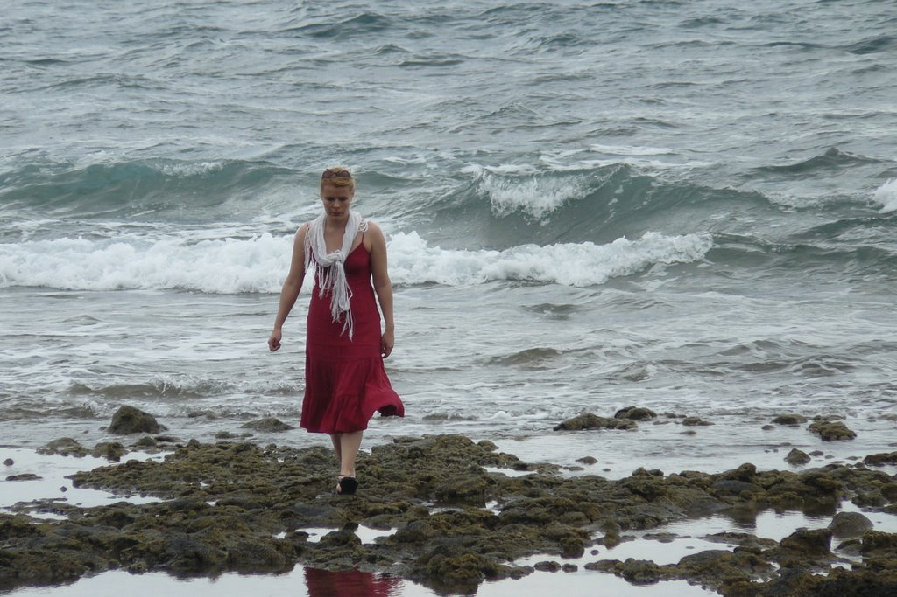

Gunna geht immer ein bisschen schneller als alle anderen. Nicht weil sie es eilig hat – sondern weil ihr Kopf schon drei Schritte weiter ist. Auf diesem Strand auf Teneriffa nahm sie sich ihre fünf Minuten allein. Rolling Stones im Ohr, das Meer auf der linken Seite, und ein ganzes Jahr Sturm hinter sich. Sie ist an die Küste gezogen. Sie ist angekommen.